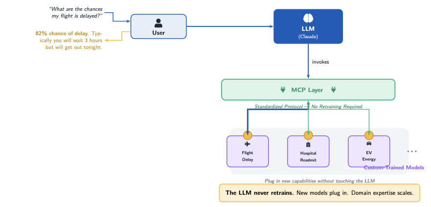

What is the future of AI? Where—and on what—will the software engineers and data scientists we mint today be working in the next two to four years?
It won't be training the next massive LLM to finally achieve general AI. Hardly. Far from it.
The next two to four years will see the opposite: a series of smaller projects aimed at giving LLMs real predictive capability. Let me explain how my Fall 2025 Data Intensive Computing class clued me in to what the future will be. They created exactly what the future will look like—LLMs enabled by a technology called Model Context Protocol (MCP) to make custom-tailored AI insights for specific domains.
The Background
I keep up with my industry friends. Academia has one view of AI technologies; industry has quite another. A good friend, Andrew Sivadas, clued me into two things: agentic AI and MCP.
A note for my fellow programmers: if you haven't downloaded Claude Desktop and used it, stop what you're doing and look now. Don't make the misconception that it's like the web versions—it requires a completely different mindset.
So what is MCP? It's so simple, yet so unbelievably powerful. It's a way to integrate data sources with an LLM. Think of it as USB-C for AI applications—a standardized way for AI systems to access and interact with external data. If you want to dive deeper, Anthropic offers an excellent free course on it.
How the Students Used It
The semester-long project unfolded in three phases. First, students sourced and cleaned real-world datasets—wrangling missing values, normalizing schemas, and engineering features from raw CSVs and APIs. In the second phase, they built and validated machine learning pipelines using Apache Spark MLlib: training classifiers and regressors, tuning hyperparameters, and evaluating performance through cross-validation. The final phase was the integration point—students wrapped their trained models in MCP servers, exposing prediction endpoints that Claude Desktop could invoke. The result? Domain expertise becomes conversational. Here is a cross-section of what they built:
| Project Description | User Question Asked to LLM | Dataset |
|---|---|---|
|
Flight Delay Prediction Processes 5M+ U.S. domestic flights with weather integration. Gradient Boosted Trees classifier achieves 87% accuracy and 0.91 AUC. |
"I am in Midway—I'm worried my Las Vegas flight will be delayed. Go find the forecasts and figure it out." | Bureau of Transportation Statistics |
|
Hospital Readmission Risk Predicts 30-day readmission for diabetic patients using 68,629 patient records. Random Forest model achieves 0.94 AUC and 95% accuracy. |
"I am looking to discharge this patient. What are the chances for a readmit in two weeks?" | UCI Diabetes 130-US Hospitals |
|
EV Energy Optimization Analyzes 118K driving records with OpenStreetMap road network data. Random Forest and Linear Regression predict energy consumption and speeding risk. |
"My EV has this much charge. Here is where I'm going. Give me the route that conserves the most battery." | OpenStreetMap + EV Telemetry |
|
Workplace Sentiment Analysis Integrates 85K+ Glassdoor reviews with ESG sustainability data. Logistic Regression and ensemble methods classify sentiment and predict workplace recommendations. |
"What is the most prevalent type of complaint employees have about this company?" | Glassdoor Reviews + MSCI ESG |
|
Network Intrusion Detection Processes IoT-23 network traffic dataset for malware classification. Multi-stage pipeline with ML/DL models detects anomalous behavior across IP addresses. |
"This network just pinged as anomalous. What is going on with these IPs?" | IoT-23 Dataset |
You see what's happening here? Each project represents a human deciding: "This is the type of insight I need. Let me train, test, and validate a model for it." The LLM didn't ingest this data—it calls upon these custom-trained, domain-specific models through MCP.
The Paradigm Shift
Here's what this architecture looks like in practice. A user asks a natural language question. The LLM receives it, recognizes the need for domain-specific prediction, and invokes the appropriate model through MCP. The model returns its answer, and the LLM contextualizes it for the user. The key insight? The LLM never needs to retrain. New capabilities simply plug in.

Now expand this paradigm out. Think of every organization that harbors or holds just CSV data—just that! The admissions history for a small parochial school. The sensor readings for a controller at a hospital. The sales records for an HVAC company. The purchases for a restaurant. Each one backed by a human with a specific need or question.
That's a lot of needs.
Once the LLM has the reply back from these custom models, it can fly. At that point, let the LLM contribute—it knows the context of the question, and it can amplify. It can even connect it with other custom models.
The Future is Micro
The future is micro. The future is custom.
The LLMs can keep growing, but the most growth will be humans plugging in more predictive services. The real opportunity isn't in building the next foundation model—it's in connecting the mountains of domain-specific data that already exist in every organization to the intelligence layer that LLMs provide.
There's gold in them there CSVs. And my students just showed me how to mine it.
References
-
Model Context Protocol Documentation — Anthropic's official MCP guide
https://docs.anthropic.com/en/docs/agents-and-tools/mcp -
Introducing the Model Context Protocol — Anthropic's announcement post
https://www.anthropic.com/news/model-context-protocol -
MCP GitHub Repository — Open-source protocol and SDKs
https://github.com/modelcontextprotocol -
Introduction to Model Context Protocol — Free course from Anthropic
https://anthropic.skilljar.com/introduction-to-model-context-protocol -
Getting Started with MCP on Claude Desktop — Setup guide
https://support.anthropic.com/en/articles/10949351-getting-started-with-model-context-protocol-mcp-on-claude-for-desktop -
Download Claude Desktop
https://claude.com/download -
AI Agents with Claude — Overview of agentic AI capabilities
https://claude.com/solutions/agents -
Building Agents with the Claude Agent SDK — Engineering deep-dive
https://www.anthropic.com/engineering/building-agents-with-the-claude-agent-sdk